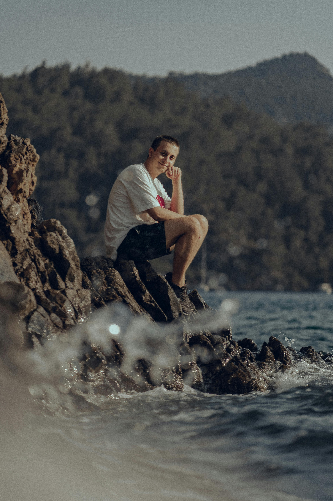
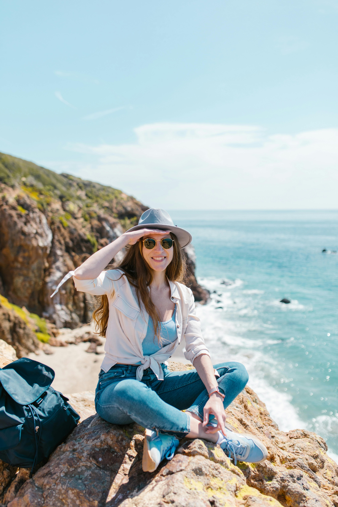
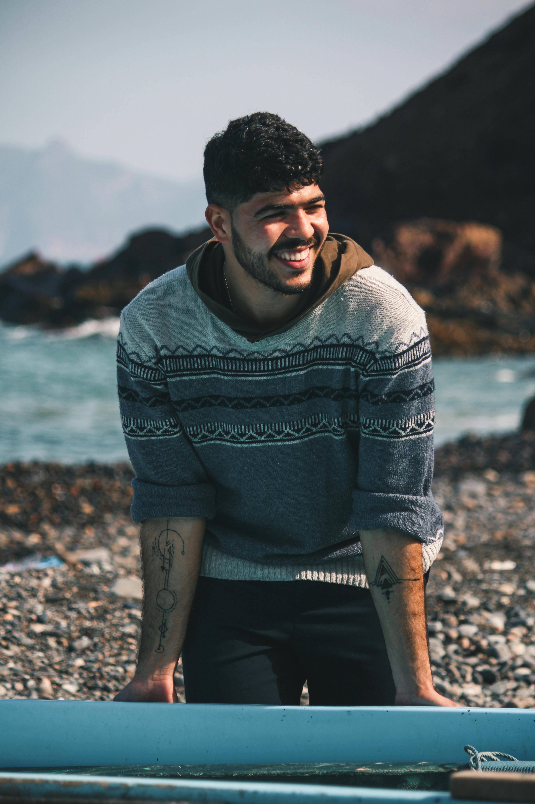

About Us
Our Story
Pacific Trails Resort began as a dream to create a serene coastal retreat blending luxury and nature. Founded by John Smith, our resort welcomes guests from around the world seeking adventure and tranquility on California’s beautiful North Coast.
Our Heritage
Rooted in sustainable tourism and a deep respect for the environment, Pacific Trails Resort honors the native coastal ecosystems. Over the years, we've grown while preserving the natural beauty and cultural history of the Zephyr region.
About The Trail
Our resort is nestled among miles of scenic hiking trails that offer breathtaking views of the Pacific Ocean. Guests enjoy guided tours led by expert naturalists who share stories of the land, wildlife, and local flora.
Join Our Family
At Pacific Trails Resort, we foster a welcoming community of staff and guests alike. We believe in genuine hospitality and building lasting relationships through shared experiences in nature.
Our Values
We believe in sustainability, hospitality, and community. Our commitment is to provide a respectful and enriching experience that honors nature while delivering unmatched comfort and service to our guests.
Discover Pacific Trails Resort
Pacific Trails Resort12010 Pacific Trails Road
Zephyr, CA 95555
888-555-1212
Meet Our Team
John Smith — President and Founder
John’s passion for nature and hospitality has shaped Pacific Trails into a coastal haven for adventure and relaxation.
Vanessa Chen — Guest Services Manager
Vanessa ensures every guest feels welcome and taken care of, coordinating activities and personalized services.
Mark Jackson — Head Trail Guide
Mark leads our guided hikes and outdoor adventures, sharing his extensive knowledge of the local flora and fauna.
Sarah Lopez — Sustainability Coordinator
Sarah champions our environmental initiatives, ensuring our resort operates in harmony with the coastal ecosystem.